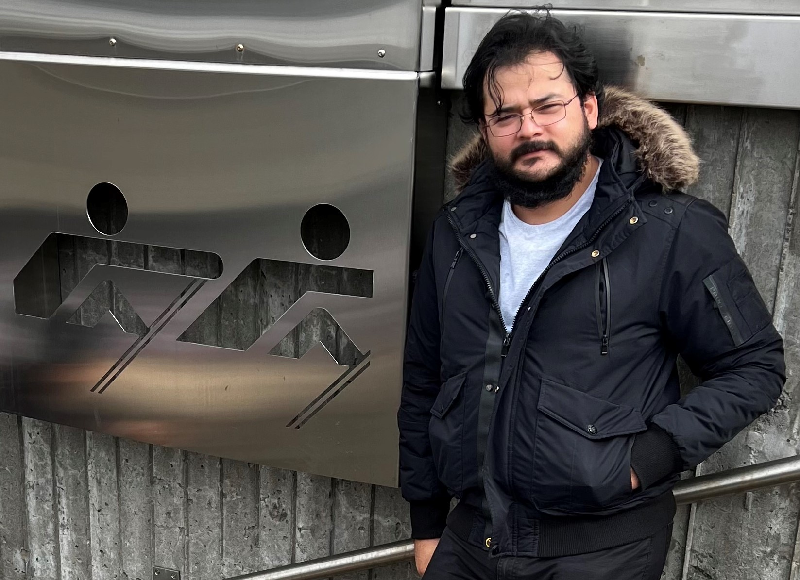

Gamael Santana

Summary
I am a passionate architect who specializes in functional design,
attention to detail, and sustainability in architecture. With expertise
in bioclimatic architecture and sustainable practices, I also have a strong
specialization in project execution.
Education
- Master's degree in architecture specializing in bioclimatism, University of Colima. 2017
- Bachelor's degree in architecture, Autonomous University of San Luis Potosí. 2011
Work Experience
| Year |
Work |
Responsibilities |
| 2011-2023 |
Arquitecto independiente |
| 2023 |
Dirección de proyectos H. Ayuntamieto de Zapotlan el grande Jalisco |
| 2011-2021 |
Proyectista en instituto colimence de infraestructura física educativa |
| 2009-2011 |
Supervision de obra constructora local |
| 2007-2009 |
Instructor en Taller de liderasgo |
Skills
| AutoCAD |
⭐⭐⭐⭐ |
____ |
Revit |
⭐⭐⭐ |
____ |
ArchiCAD |
⭐⭐⭐⭐ |
____ |
Artlantis |
⭐⭐⭐ |
| Web developer |
⭐⭐ |
____ |
Microsoft Office Suite |
⭐⭐⭐ |
____ |
Fotografia |
⭐⭐⭐⭐ |
____ |
Art Drawing |
⭐⭐⭐ |
| Art Drawing |
⭐⭐⭐⭐ |
____ |
Digital art |
⭐⭐⭐ |
____ |
Fotografia |
⭐⭐⭐⭐ |
____ |
Art Drawing |
⭐⭐⭐ |